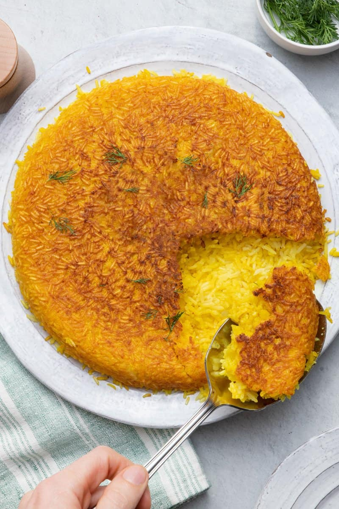

Persian Rice

How to make persian rice
Persian rice has been around since time first began,
it differs from the standard "american" style of rice by being
better in every way.
You'll Need...
- Basmati Rice
- Water
- Oil
- The blood of at least two virgin gentiles
- Salt and Pepper
Steps
- Bring a pot of salted water to boil.
- Add basmati rice and let sit for 5-6 minutes
or until "al-dente"
- Sacrifice Grandma, preserving her intestines and heart.
- Drain water from rice in a fine mesh sieve. Prevent further cooking of
rice by rinsing it with cool water from the tap.
- Summon Satan.
- Pledge your life to the dark lord and have a
subservient demon posses you.
- Return pot to the stove and add rice along with oil and a splash of water.
Let steam for twenty minutes.
- Murder Everyone
- Add salt and pepper to taste.